1
Third Nationally Determined Contribution to the United Nations Framework Convention on the Climate Change (UNFCCC)
Adaptation Communication to the UNFCCC
Update of the National Biodiversity Strategy in accordance with the Convention on Biological Diversity (CBD)
Update of the National Land Degradation Neutrality Strategy under the Convention on the United Nations Programme to Combat Desertification (UNCCD)
This document was prepared by the Ministry of Environment of Panama (MiAMBIENTE) in collaboration with stakeholders and national and international authorities.
Panama, 2025.
Authorities - Ministry of Environment
Juan Carlos Navarro, Minister of the Environment
Oscar Vallarino, Vice Minister of the Environment
Gisela Rivera General Secretary
Juan Carlos Monterrey
Special Representative for Climate Change
Tomás Fernández
National Director of Protected Areas and Biodiversity
Karima Lince
National Director of Water Security
Carlos Espinosa
National Forestry Director
Marilyn García-Paredes
National Director of Environmental Performance Verification
Digna Barsallo De León
National Director of Coasts and Seas
Fanny Gonzáles
Head of the Indigenous Peoples' Environment Office
In collaboration with:
Ministry of Health
Ministry of Agricultural Development National Energy Secretariat Urban and Domestic Waste Management Authority
Technical Coordination Melani Acosta
Selene Orozco Marmolejo Megan Chen Chung
Ana Luisa Aguilar
Technical support
Javier Martínez Cedeño Katherine Martínez Juan Lucero
Mabel Zúñiga, Yuriza Guerrero, Raúl Gutiérrez, Carolina Velásquez, Darío Luque, Jonathan Rodríguez, Keneth Morán Karen Victoria Claudia Carranza Debbra Cisneros Jovel Núñez Torres
Text Editing: Melani Acosta Chin
Selene Orozco Marmolejo Megan Chen Chung
Design and Layout: Manuel Fernández, José Palacios
Gustavo Palacio
Additionally, we thank and acknowledge the valuable contribution made by the member entities of the Committee Panama's National Climate Change Commission, the Inter-institutional Biodiversity Commission, and the National Committee of the Fight against Drought and Desertification in the development of this initiative.
We also appreciate the technical support of the United Nations System agencies: UNDP, FAO, UNEP, UNICEF, UN Women and OHCHR, whose contribution strengthened this document and incorporated a comprehensive vision.
None of this would be possible without the support of Mr. José Raúl Mulino, President of the Republic and Secretary of State Foreign Minister Javier Martínez-Acha, whose vision for the State and commitment to the Panama's environmental sovereignty has allowed nature, justice, and development to go hand in hand.
The planet is dying. The world is in crisis. We see it in the forests that are being cut down and burned, in the lands that They dry out and crack and become unproductive, in seas that overheat and lose their biodiversity. We see it in communities displaced by floods, in crops lost to droughts, in fishermen who They return with empty nets, leaving behind children who inherit a future marked by uncertainty. Enough is enough! No We can remain trapped in a broken system, where institutions work in isolation in compartments and Solutions are diluted, while nature bleeds. The Republic of Panama, fulfilling its mandate constitutional guarantee of a healthy and sustainable environment, declares its decision to act urgently and coherence, uniting science, public policies and territory.
The Panama Nature Pledge, announced by President José Raúl Mulino in the United Nations General Assembly 2025, is our manifesto of survival and dignity: a framework a unified system that integrates our goals, in accordance with the multilateral system and national realities. in climate change, biodiversity, combating desertification, plastics, marine conservation and This approach, which integrates land-based planning into a single national plan with clarity and transparency, responds to the call for a first-time national plan. Global assessment of the Paris Agreement and the Sustainable Development Goals, overcoming fragmentation and prioritizing integrated and multi-sector solutions.
Our goals are concrete and comprehensive. By 2027, we will promote the enhancement, revitalization, and total consolidation of the country's national system of national parks and protected areas, strengthening its managed under the highest international standards. By 2035, we are committed to restoring 100,000 hectares of ecosystems; achieve net-zero deforestation; reduce our emissions by 11%; and Reduce plastic pollution by 50%. Also, by that same year, 40% of our territory will be affected. Land and 60% of our seas will be officially protected, consolidating Panama as a leader global conservation and sustainability. These goals, taken together, are at the heart of a shared vision that protects the life, economy, and identity of Panama, with verifiable indicators and mechanisms of Public monitoring developed in the technical annexes. To achieve these objectives, we will establish the The Panama Natural Fund, announced by the government of Panama at the 2025 United Nations General Assembly, to to guarantee permanent and long-term funding for nature conservation and biodiversity.
But conservation is not enough: we also need to regenerate and restore: we will recover degraded lands, We will sustainably manage soils and watersheds, and protect water as a common good. Our ocean is the backbone of our identity and economy: we will strengthen marine protection and We will combat plastic pollution, ensuring healthy marine, coastal and island ecosystems and Sustainable fisheries. We will halt the loss of species and habitats, and ensure that knowledge ancestral knowledge and the benefits of nature are cared for, preserved, and shared fairly and equitable. Because we understand that there is no climate justice without ecological justice, nor ecological justice without social justice: both depend on conserving nature today and guaranteeing its care and protection for always.
Adaptation is an integral part of this vision. With the Regional Climate and Nature Observatories We will bring science, innovation, conservation, and traditional knowledge to every territory. These centers are not They will be limited to climate issues: they will be the comprehensive platform where all of Nature's commitments will be realized. Pledge, from restoration to biodiversity protection, water management, and the fight against Pollution and community resilience. There, on the ground, the synergy we proclaim today will be experienced: a A space where nature, society, and the economy work together in the same direction. Through the observatories, we will work at the local level to include children, adolescents and youth in the design of solutions that will impact their future.
As a country with a strong maritime vocation, Panama assumes additional commitments for the protection of the ocean in all its dimensions. We will lead the global movement to create the first High Seas Protected Area, covering 10 million square kilometers, to safeguard the high seas ocean limits of Tropical Eastern Pacific Marine Corridor, vital for migratory species such as humpback whales.
We support the global Antarctic Avengers campaign, which seeks to stop destructive industrial fishing in the Antarctic. Antarctica, including krill fishing — the essential food for whales migrating from those From icy seas to our tropical sanctuaries in Panama. We will lead the Silent Ocean Coalition. aimed at reducing underwater noise pollution and its impacts on migratory marine species. We will maintain a firm position of opposition to deep-sea mining in all areas, promoting a a global moratorium based on the precautionary principle. We will also lead the Pioneer Countries Coalition of Treaty on Biodiversity beyond National Jurisdiction (BBNJ), promoting its firm entry into force and its equitable implementation.
We recognize that losses and damages resulting from the planetary environmental crisis are already unavoidable in many cases. Floods, droughts, heat waves, and forced displacements are not future threats, they are realities. present, with direct effects on the health and quality of life of human beings. We are committed to Strengthen the national system for monitoring and assessing loss and damage, ensuring informed decision-making. based on scientific evidence and rapid responses in all territories. And when there is no alternative, We will implement a dignified and fair Planned Relocation Protocol that ensures the rights and means of life of communities that must rebuild their future on safe lands, as Panama has already been forced to This will be implemented in Guna Yala, in the community of Gardi Sugdub. This system will be coordinated with the National Platform. Climate Transparency (PNTC) and sectoral information systems.
We are aware that none of this will be possible without ongoing funding. That is why we affirm that the Fund Panama Natural is a cornerstone of this commitment: a tool designed to safeguard conservation and Resilience, ensuring stable, permanent, predictable, and long-term financing. We will prioritize international cooperation and financing. new, additional, predictable and accessible environmental measures, including innovative instruments that do not increase the the country's public debt, but rather the opposite: they contribute to reducing the debt and bringing back their flows to the country. We also recognize the key role of the private sector and public-private partnerships to Mobilize investment, technology, and green jobs. We will promote entrepreneurship and private investment in proactive and enthusiastic manner, prioritizing free enterprise and sustainability.
Within this framework, we also embrace the fundamental transformation that environmental justice demands. We are committed to a a just transition that ends dependence on fossil fuels and ensures clean energy and accessible to all. We are committed to resilient agri-food systems, capable of guaranteeing Food sovereignty and decent livelihoods for peasants, rural women, indigenous peoples, communities local and Afro-descendant communities. We will promote sustainable cities, designed with solutions based on in nature, resilient infrastructure and clean mobility. And we aim to build an economy A circular economy that eradicates plastic pollution and transforms waste into innovation and opportunities. Gender equality and women's empowerment will be cross-cutting principles of this transformation. In doing so, we will protect public health and well-being by reducing the risks of heat waves, disease, and extreme events.
No one can be left behind. Women, children, youth, indigenous peoples, Afro-descendants, communities rural and coastal areas, senior citizens, people with disabilities, entrepreneurs, business owners, investors, academics and activists. This Pact includes every person, community, and living being on our Earth. Climate justice is not an aspiration, it is an ethical and political mandate.
To the whole world we say: enough with empty rhetoric. Unite. Governments, businesses, academia, people, Businesspeople, philanthropists, investors, youth. Bring capital, technology, political will. Our This commitment aligns with an effective cooperation agenda that transforms ambition into results. Nature doesn't wait, and neither do we. Panama is ready. Not to continue a broken game, but to change. The rules. Not for managing the crisis, but for leading the transformation.
In keeping with this inclusive vision, we call upon the United Nations system, in particular to The Secretariats of the Rio Conventions, to accelerate their own integration. Negotiating is not sustainable. interdependent solutions in three separate conferences. We propose coordinating agendas and schedules. establish high-level joint segments, create integrated financing windows, and harmonize the reporting frameworks, with full respect for the mandates. We also invite consideration of decision-making methods. decision that ensures timeliness and effectiveness: when, after good faith efforts, consensus is not possible, adopt decisions by majority vote, in a transparent and inclusive manner, in accordance with the practices of the Assembly General. Just as we are asked to integrate, we ask that the multilateral system integrate its governance to turning ambition into results.
This is our manifesto. This is the Panama Pact with Nature: a living movement, a commitment Irrevocable with life, justice, and hope. Climate justice is not an aspiration, it is a mandate. Ethical and political. Fragmentation weakened us; working together will make us invincible today and in the future. Tomorrow. This is the way. Our future starts today.
Juan Carlos Navarro Minister of the Environment
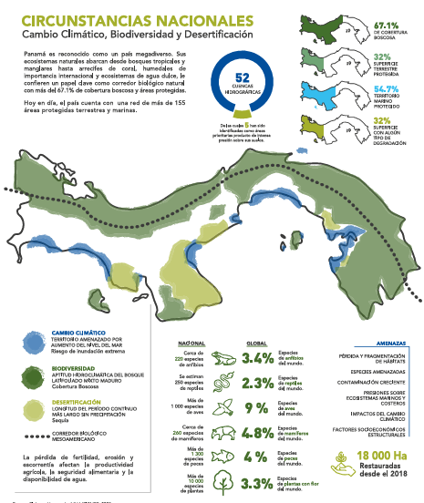
The Panama Pact with Nature adopts an integrated national vision that unites climate commitments, of biodiversity and sustainable land management, under a harmonious framework of sustainability, resilience and Environmental justice. Its approach seeks to ensure that all actions contribute simultaneously to environmental justice. mitigation, adaptation, restoration and conservation, avoiding duplication of efforts and maximizing the joint benefits.
NATIONAL STRATEGIC VISION
The Panama Pact with Nature guides the country's efforts towards the protection of nature, the restoration of degraded ecosystems, adaptation to climate change and strengthening of community resilience. This vision reaffirms Panama's environmental leadership and its commitment to well-being of the population and the health of ecosystems.
It is fully aligned with the Government's Strategic Plan 2024–2029, which prioritizes sustainability water resources, food security, climate change, and territorial governance. Therefore, the actions of The pact responds directly to national development goals and strengthens integration between the environmental and socioeconomic policies.
The Panama Pact with Nature is Panama's commitment to move from plans to action. More than A compilation of documents, the pact is a living agenda that integrates our efforts in biodiversity, Climate change, land degradation, oceans, and plastics. Through this, we present in a way that unified the following strategic documents, adopting an integrated and technical-operational approach:
The National Biodiversity Strategy is aligned with the Kunming-Montreal Global Biodiversity Framework (CBD);
National Land Degradation Neutrality Strategy (NDTS) governed by the Strategic Framework of the CNULD;
The Nationally Determined Contribution 3.0 is guided by the objectives of the Paris Agreement.
This approach guides the national vision towards three integrated strategic objectives of the Panama Pact with Nature and ensures traceability with the Objectives of the Global Biodiversity Framework, the Objectives of the UNCCD Strategic Framework and the objectives of the Paris Agreement, which are detailed below.
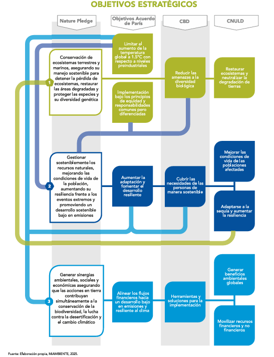
CONTRIBUTION TO THE 2030 AGENDA
This national vision is fully aligned with the goals and expected effects of the UNFCCC, CBD and UNCCD, ensuring that Panama contributes not only to the fulfillment of the objectives of the Rio conventions, but also with the Sustainable Development Agenda as follows:
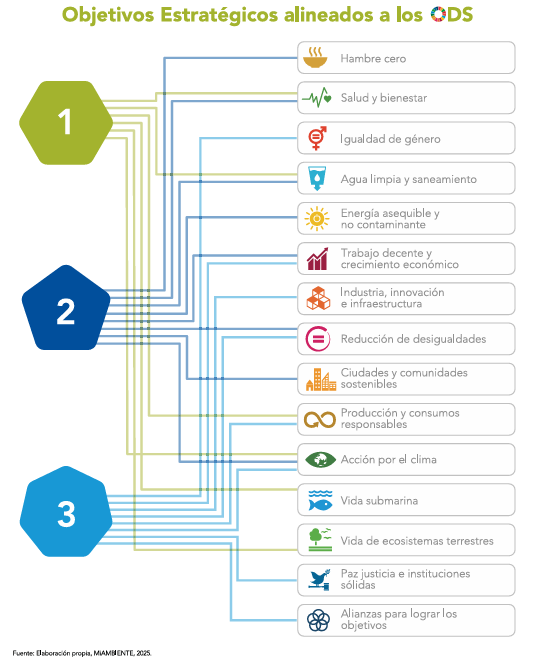
Cross-sectional principles
The implementation of the vision and strategic objectives of the Panama Pact with Nature will be based on cross-cutting principles that guide all actions and ensure coherence between biodiversity, change climate and land degradation neutrality.
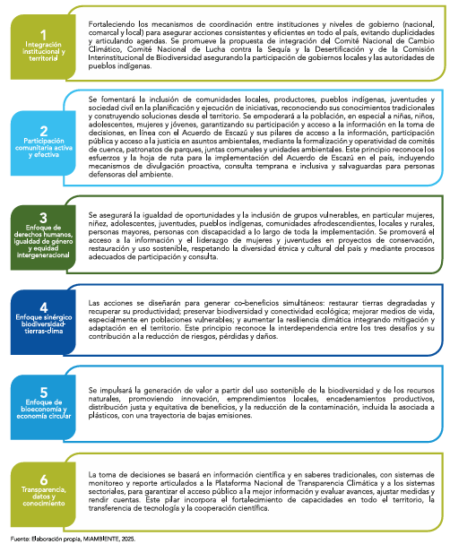
Applying these principles will ensure that implementation is inclusive, equitable, and consistent, and that Multiply positive impacts. In practice, every program, project, or policy derived from this strategy It will be evaluated in light of these principles, guaranteeing productive and recovering lands, communities resilient and prosperous, and integrated territorial management that simultaneously contributes to national well-being and to compliance with global environmental agreements.
GOALS AND INSTITUTIONAL ARRANGEMENTS FOR NATIONAL CLIMATE ACTION
This annex constitutes Panama's response to the global call to communicate more clearly and transparently. and understandable its actions to mitigate and adapt to climate change. It reflects the country's commitment to climate ambition, accountability and effective implementation of the Paris Agreement, incorporating assumptions, methodologies, and institutional frameworks that underpin its climate action. This information will be updated and monitored periodically through the Biennial Transparency Reports (BTR), in accordance with Enhanced Transparency Framework.
Panama's Nationally Determined Contribution (NDC) 3.0 comprises two main components:
A Mitigation objective, structured as a reduction target accompanied by policies, measures and instruments for its implementation.
An Adaptation Communication, which includes process goals based on measures aimed at strengthening the resilience of communities, ecosystems and key economic sectors to climate impacts current and projected, also considering diversification measures and vulnerability reduction.
MITIGATION TARGET IN ACCORDANCE WITH DECISION 4/CMA.1
Within the framework of the Paris Agreement, Panama presents the Information to facilitate Clarity, Transparency and Comprehension (ICTU), a mechanism designed to transparently report the Update to the Nationally Determined Contributions (NDCs). This instrument provides clarity. about the objectives, the methodologies applied and the assumptions used, facilitating their understanding and the International monitoring. Below, Panama outlines the progress and assumptions that underpin CDN 3.0.
The Republic of Panama presents its Third Communication on Adaptation, in compliance with Article 7, paragraphs 10 and 11 of the Paris Agreement, and in accordance with Decision 9/CMA.1, which establishes the guidelines for its Preparation and presentation. This document outlines national priorities and needs in the area of adaptation within the framework of the Panama Pact with Nature.
In Panama, adaptation is conceived as a transformative process that reduces risks and losses, and strengthens the knowledge restores ecosystems and protects biodiversity. Through adaptation based on ecosystems, the country seeks to generate environmental, social and economic co-benefits that strengthen the population resilience, sector productivity, and the ecological integrity of the territory national.
In accordance with the Global Goal on Adaptation (Article 7.1 of the Paris Agreement), the State has established a national adaptation goal that guides long-term action:
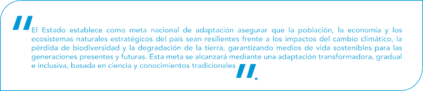
This national adaptation goal aligns clearly with the three components of the global objective Regarding the adaptation established by the Paris Agreement:
Increasing adaptive capacity through climate information, strong institutional frameworks, and integration of scientific and local knowledge;
Reducing the vulnerability of populations, sectors, and ecosystems by transforming the conditions that affect them They make us more sensitive to impacts; and
Strengthening resilience, aspiring not only to resist and recover, but to thrive with systems more robust, flexible, and interconnected social, economic, and ecological systems.
The national adaptation commitment is organized around priority areas that concentrate action The country's strategic priorities: energy; forests; sustainable agriculture, livestock and aquaculture; integrated management of watersheds; biodiversity; public health; sustainable infrastructure; human settlements resilient sectors, tourism, and the circular economy. These sectors reflect the areas where the goals of adaptation, biodiversity conservation and land degradation neutrality, enabling the generation environmental, social and economic co-benefits and strengthen coherence between policies implemented under the three Rio Conventions.
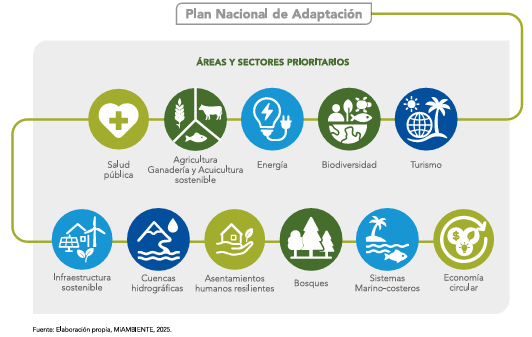
COMMITMENTS, GOALS AND INSTITUTIONAL ARRANGEMENTS FOR THE CONSERVATION AND SUSTAINABLE USE OF BIODIVERSITY
Biodiversity, both terrestrial and marine, is one of Panama's most valuable assets and essential for to support human well-being, climate resilience, and economic development. Panama, due to its location Its strategic geographic location possesses one of the greatest biological riches on the planet, with unique natural ecosystems. high ecological value that also acts as a biological bridge to the continent through its terrestrial ecosystems, marine and inland waters. Panama has 67.1% of its territory covered by forest ecosystems and the 54.7% of the seas are under protection. Our oceans are home to coral reefs, seagrass beds, mangroves, fish stocks and emblematic species that not only sustain marine life, but also artisanal fishing, the Sustainable tourism, food security and ecosystem services essential for mitigating climate change.
Panama adopts a comprehensive strategic vision to conserve and sustainably use its biodiversity. For the first time At once, the country compiles its commitments on climate change, biodiversity and desertification under a single framework, responding in a coordinated manner to these three global environmental crises.
In response, it reaffirms its commitment to the Convention on Biological Diversity (CBD) and its implementation of the Kunming–Montreal Global Biodiversity Framework derived from decisions 4/COP.15 and 6/COP.15, as well as with the 2030 Agenda and its Sustainable Development Goals, particularly SDG 14 (Life Below Water) and SDG 15 (Life in terrestrial ecosystems).
This strategy is the result of the process of defining national goals within the framework of the project “Support for the Early Action of the Kunming-Montreal Global Biodiversity Framework (GBF-EAS)” led by the Directorate of Protected Areas and Biodiversity, with the support of the United Nations Development Programme (UNDP) that Through participatory workshops during 2024, it sought to strengthen the debate in the goal-setting process. measurable, budgeted and explicit national indicators that will be monitored periodically through the Reports National Biodiversity.
The Panama Pact with Nature updates and replaces the 2018 National Biodiversity Strategy (aligned to the Aichi Framework) and incorporates national priorities for the period 2025–2035. In addition, it integrates a language common goals that will reinforce each other through joint implementation of the three Rio Conventions. It also lays the groundwork for aligning finances with biodiversity conservation.
Caring for and restoring biodiversity is a direct path to achieving Land Degradation Neutrality and Strengthening climate change mitigation and adaptation keeps the land healthy and helps to address the Changes in weather patterns. Natural ecosystems capture and store carbon and act as barriers. natural factors in the face of droughts, floods and storm surges.
PROGRESS IN BIODIVERSITY CONSERVATION
Since 2018, Panama has made steady progress in implementing its National Strategy for Biodiversity, consolidating a solid foundation for the new goals by 2035. The country now has more than 122 areas protected terrestrial and marine areas, a coverage that reflects its commitment to conservation and sustainable use of natural heritage.
Among the main achievements are the increase in the protected marine area to 54%, nine years earlier than the global 30x30 target, the expansion of biological corridors and connectivity zones, and the strengthening of National System of Protected Areas (SINAP) through the training of park rangers, cooperation inter-institutional collaboration and the use of satellite technologies for environmental monitoring. Likewise, the adoption of policies how the National Ocean Policy and the Wetlands Policy have allowed the integration of biodiversity criteria in the management of productive and territorial sectors.
The Ministry of Environment has promoted flagship projects such as the Green Tourism Action Plan, the Plans Wildlife Rescue and Relocation Program, and the Natural and Cultural Heritage Conservation Program, which They strengthen the link between conservation, sustainable development and local well-being.
The lessons learned are clear: biodiversity is not limited to protected areas, its management must Integrate into sectoral, local, and community policies. Strengthen the SINAP with technical capacities. Sustainable financing and social participation are essential to address deforestation and pressures. about ecosystems.
The strategic use of technology and environmental traceability has improved transparency and decision-making. evidence-based decisions, promoting effective law enforcement and crime prevention These advances allow Panama to position itself as a regional leader in conservation and governance. of biodiversity.
COMMITMENTS, GOALS AND INSTITUTIONAL ARRANGEMENTS FOR COMBATING DESERTIFICATION
Land degradation is one of the most significant environmental challenges facing Panama, impacting directly impacting land productivity and biodiversity, human rights, and well-being socioeconomic and climate resilience of the country, especially to our local communities.
Panama adopts an integrated strategic vision to achieve Land Degradation Neutrality (LDN) by 2035, fully aligned with the Panama Pact with Nature. For the first time, the country integrates under a single It framed its commitments on climate change, biodiversity and desertification, responding in a coordinated manner to These three urgent environmental crises.
In response, Panama committed to the international Land Degradation Neutrality initiative. (NDT), in line with the United Nations Convention to Combat Desertification (UNCCD) and the Sustainable Development Goal 15: Life on Land (SDG 15.3: on land degradation, SDG 15.3.1: on percentage of degraded lands).
The NDT responds directly to the mandate derived from Decisions 3/COP.15 and 13/COP.15 adopted by the Parties at the UNCCD COP 15, from which Panama was selected among the 18 countries that are part of the second phase of the Land Degradation Neutrality Targeting Program (LDN Target) Setting Program (TSP) 2.0 at Doha). This program, led by the Water Security Directorate with the support of The Food and Agriculture Organization of the United Nations (FAO) seeks to ensure that the goals national land degradation neutrality targets should be specific, time-bound, and consistent with national policies that are quantitative, spatially explicit, gender-sensitive, and appropriately integrated into the country's planning frameworks and will be monitored periodically through the National Reports of Implementation.
Land Degradation Neutrality is understood as the condition in which the quantity and quality of the land resources remain stable or increase relative to a baseline, avoiding net losses of productive land needed to sustain ecosystem functions and increases security food.
This NDT Strategy reaffirms Panama's commitment to the joint implementation of the three Conventions of Rio (Climate Change, Biodiversity and Combating Desertification) so that the goals are reinforced among themselves and generate tangible co-benefits: conservation of biodiversity and ecosystems, capture and Adaptation to climate change, and greater food and water security. With a rights-based approach. Humans, science and a common language, these synergies are articulated under the Panama Pact with Nature to guide coherent and effective actions.
PROGRESS TOWARDS EARTH NEUTRALITY
Since 2018, Panama has made progress in implementing its National Climate Degradation Neutrality Strategy Lands (ENDT), with goals focused on increasing forest cover, restoring degraded lands and preventing the conversion of forests to other uses. These efforts lay the foundation for a new, more integrated phase of action and geared towards measurable results by 2035.
Among the main advances are the restoration of more than 18,000 hectares of forests and mangroves through public-private and community partnerships, the rehabilitation of degraded agricultural lands and pastures through sustainable management practices, and the training of producers in conservation agriculture and livestock farming regenerative. These interventions have improved soil productivity and strengthened water services and ecosystemic.
Environmental monitoring has been significantly strengthened thanks to the use of remote sensing and analysis participatory methods, such as the National Mapathon of Forest Cover and Land Use, which allows for the detection of changes in land use and guide corrective actions in real time. At the institutional level, cooperation between MiAMBIENTE, the MIDA, local governments, academia and civil society have promoted integrated territorial management, fostering the inclusion of NDT and adaptation criteria in river basin plans.
Lessons learned confirm that the combination of massive restoration, geospatial information and Community participation can reverse large-scale degradation, improving food security and livelihoods. Panama has proven that sustainable land management not only restores ecosystems, but also It promotes a resilient, fair territorial development model aligned with global commitments of sustainability.
The Panama Pact with Nature places biodiversity at the center of climate action and Sustainable development. By 2035, the national goal is to restore and conserve 100,000 hectares of ecosystems. strategic land and marine areas, prioritizing at least 25% of degraded lands with greater emphasis on key areas for biodiversity, priority watersheds for water security and agri-food, buffer zones, mangroves, lands suitable for forestry, agricultural lands and biological corridors.
With this, Panama will strengthen ecological and community resilience, and increase carbon sinks. less than 1 million tonnes of CO2e absorbed or reduced in the LULUCF sector (Land Use, Land Change) and Forestry) through land degradation neutrality actions, improving sustainable productivity in 20% in key productive landscapes.
This goal will integrate Nature-based Solutions (NbS) approaches and ecological restoration practices. participatory, agroforestry and silvopastoral systems, and reforestation with native species, and mechanisms of participatory ecological restoration, ensuring that at least 50% of the restored area is reached by 2030.
Furthermore, the country will consolidate a functional network of at least three resilient biological corridors in the regions of Azuero, Coclé and Veraguas, promoting ecological connectivity and reducing non-commercial agricultural expansion by 30%. planned in those areas.
These actions will simultaneously contribute to the goal of achieving net-zero illegal deforestation, neutrality. of land degradation and an additional 11% reduction in emissions by 2035. These goals are linked directly with the vision of conserving, restoring and sustainably using the country's natural capital.
In this regard, the strengthening of the National System of Protected Areas (SINAP) towards standards international agreements will allow 40% of the land territory and 60% of the marine and inland water space to be included. They have effective management, participatory monitoring, and ecological connectivity.
These integrated actions will increase ecological resilience and restore nature's contributions to people, as well as ecosystem functions and services such as air and water regulation, soil fertility, disaster protection, and disease risk reduction will strengthen connectivity between terrestrial and marine ecosystems, from mangroves to watersheds and forests tropical.
Within this framework, Panama presents the following national biodiversity commitments, which materialize the convergence between the climate, biodiversity and land agendas, and consolidate the country as a global leader in results-based conservation and restoration
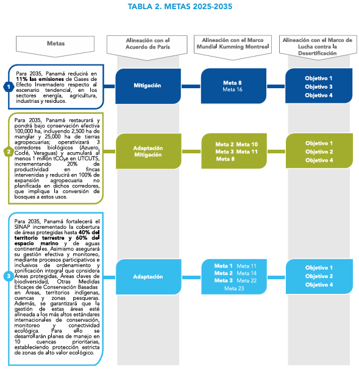
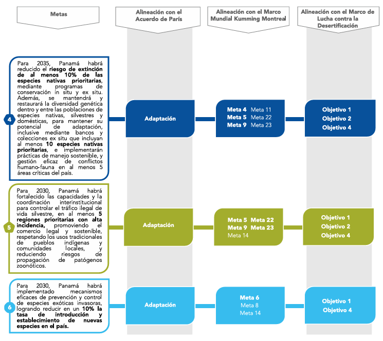
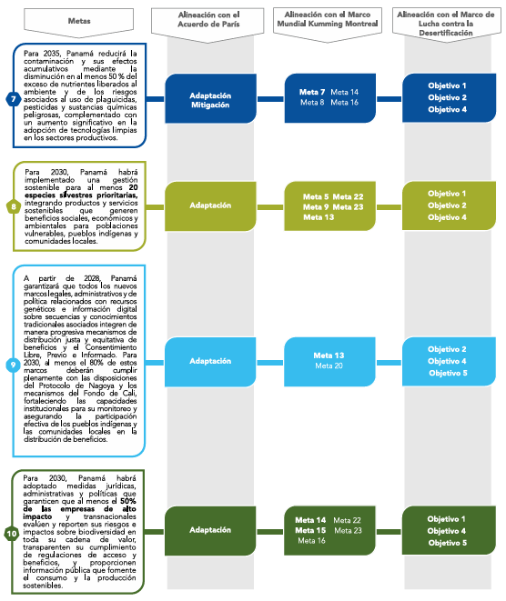
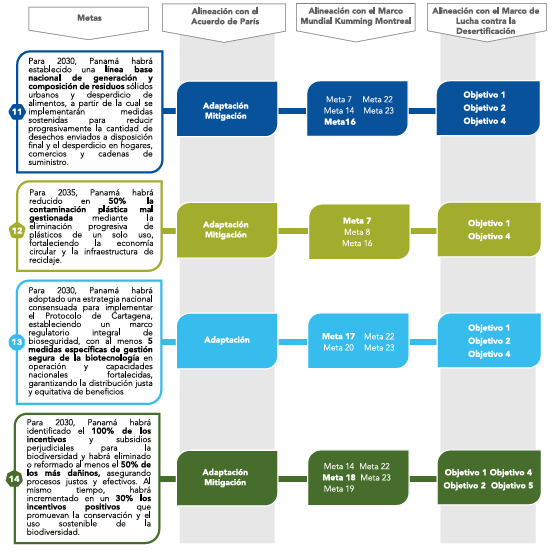
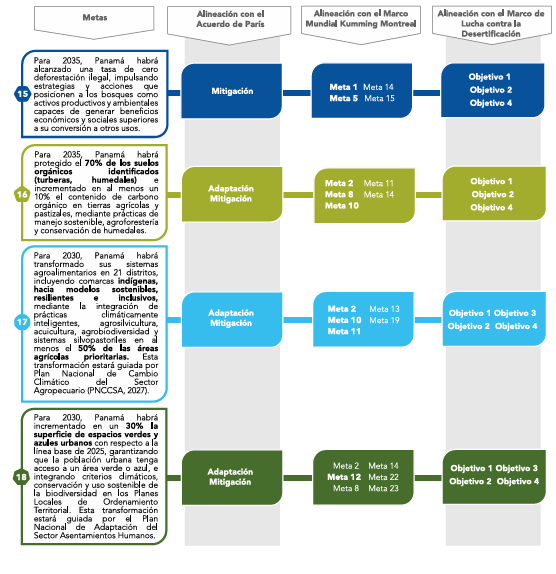
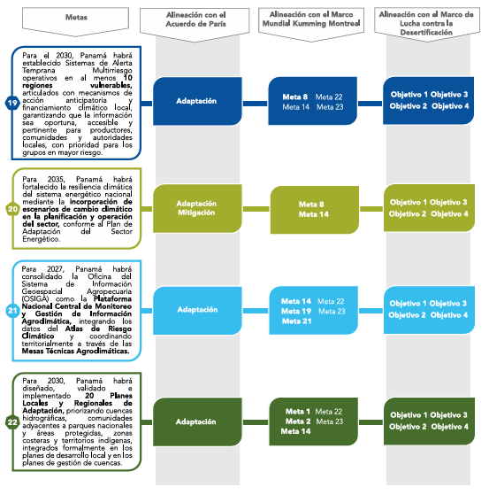
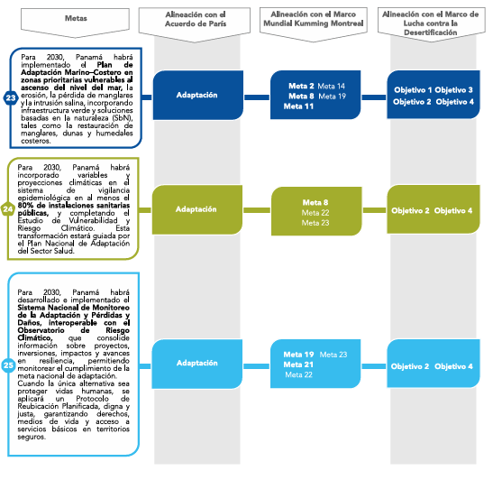
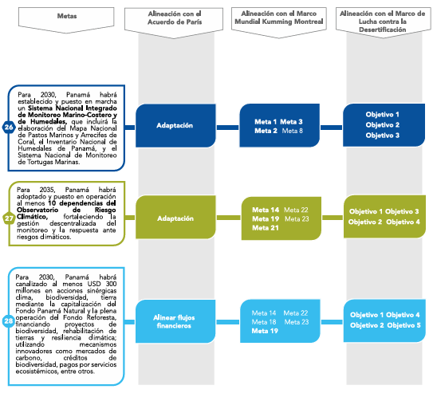
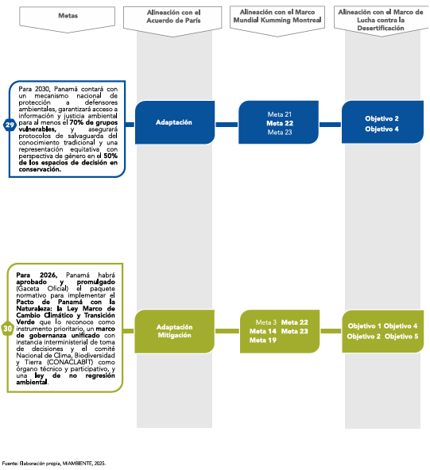
In Panama's First Biennial Climate Transparency Report (IBT, 2024), Panama presented for the first time a estimation of their needs to implement adaptation measures, identifying 21 initiatives in planning, execution, or scalability projects that require USD 1,230,132,292.62. These needs They focus on three key areas: financing, capacity building, and technology transfer. offering an initial basis for guiding international support and improving the enabling conditions of climate action in the country.
The effective implementation of Nature Pledge will depend on timely access to appropriate means of support, prioritizing Non-reimbursable funds and financing on favorable terms that do not increase external debt. These priorities respond to the need to strengthen territorial resilience, guarantee the protection of vulnerable populations, particularly children and adolescents, and reduce losses (economic and non-economic) and the damages.
Panama has made progress in strengthening its regulatory, institutional and planning framework for adaptation, but it still faces structural and operational barriers that limit the effective and sustained implementation of adaptation measures to climate change (see Table 4). These barriers were identified through national diagnoses and reports.
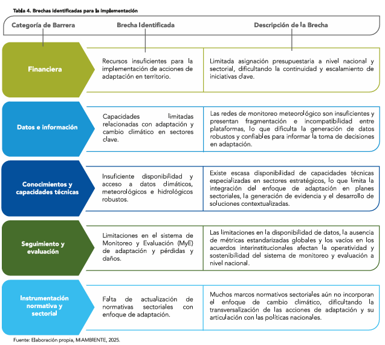
Panama is moving towards a more unified and coordinated environmental governance that allows it to simultaneously meet its objectives. its commitments to climate change, biodiversity, and combating desertification. This vision responds to the need to overcome fragmented institutional structures and consolidate an articulated, transparent system and participatory.
Currently, the country has separate mechanisms for the three Rio Conventions: the National Committee of Climate Change, the Inter-institutional Commission on Biodiversity and the National Committee to Combat Drought and Desertification, each under current sectoral policies. However, these spaces operate in a independent, which limits coordination and reduces the scope of policies.
In response, the draft Framework Law on Climate Change and Green Transition contemplates the creation of a National Green Transition Cabinet as a high-level inter-institutional body, supported by a Committee National Council for Climate, Biodiversity and Land (CONACLABIT). Essentially, this body will integrate the committees existing in a single national committee, ensuring greater scope in decision-making, promoting the Aligning agendas and avoiding isolated or duplicated efforts, while also allowing for representation multisectoral.
The new institutional structure seeks to bring governance closer to the territory by leveraging capabilities and spaces. existing local committees will be strengthened. Along these lines, the River Basin Committees present in the 52 [provinces/districts] will be reinforced. basins of the country, so that they act as operational arms of the system, integrating the municipalities, communities, water users, private sector, academia and social organizations.
In turn, these committees, along with the Rural Aqueduct Management Boards (JAAR) and the authorities Local authorities will play a key role in the implementation, monitoring, and feedback of adaptation actions. conservation and sustainable management of water at the community level.
In this way, connecting CONACLABIT with the local committees will generate a flow of information in both. senses: from the national level, guidelines and strategic orientation will be provided, while from the The territories will provide data, experiences, and real needs.
In summary, the proposed governance integrates unified national leadership with decentralized implementation, encompassing all relevant sectors: ministries, agencies, academia, NGOs, the private sector and communities, to to address in a cohesive manner the challenges of drought, climate change and biodiversity loss, leveraging the synergies between these interconnected agendas.
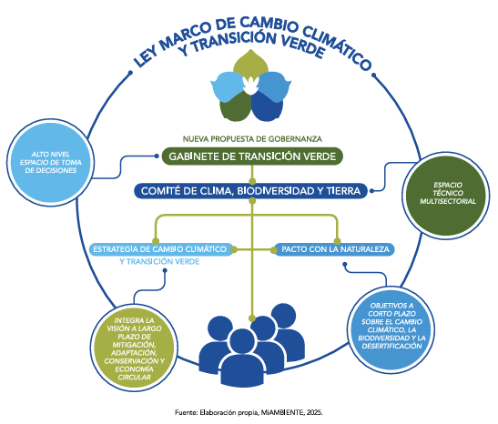
The success of Panama's Pact with Nature will depend on having sustainable financial resources. sufficient and consistent to make it possible to effectively implement conservation actions, Restoration and climate action (mitigation and adaptation). Both the National Biodiversity Strategy, the The Land Degradation Neutrality Strategy and the Nationally Determined Contribution coincide where financing is an essential foundation for achieving the country's goals in biodiversity, climate and management sustainable soil.
Combining national resources with international cooperation has become key to expanding the reach and the effectiveness of environmental and climate policies. In this sense, international cooperation has been a A crucial complement. The Green Climate Fund supports the National Adaptation Plan (NAP Panama), which strengthens risk management and sectoral planning, while the Global Environment Facility (GEF) promotes projects on drought, land restoration and community action through the Small Program Donations. These initiatives not only provide funding, but also technical assistance and capacity building. institutional and direct benefits for rural communities.
In turn, the draft Framework Law on Climate Change and Green Transition proposes new instruments for Expanding climate finance sources, including the creation of a National Carbon Market and Regulation of green and sustainable bonds. This will attract private investment to projects that reduce emissions. emissions, adaptation and conservation, generating market incentives with criteria of transparency, traceability and environmental and human rights safeguards.
Looking to the near future, Panama seeks to consolidate a solid and innovative environmental financial model, capable of Integrating different sources of resources and ensuring their long-term sustainability. The articulation of agendas Biodiversity, climate and soil will pave the way for preparing joint proposals for the funds internationally, showing a unified and coherent national vision that improves opportunities to access new resources that promote the actions of the Pact.
Indeed, Panama is moving towards a new stage of environmental financial management. The Panama Natural Fund will be the main focus of the Pact, channeling public, private and international cooperation resources to promote restoration programs, water management and climate resilience, ensuring the continuity of actions beyond political cycles.
At the same time, the country will continue to strengthen its relationship with funds such as the Green Climate Fund, the Fund of Adaptation and the GEF, and will maintain alliances with multilateral and development banks, seeking schemes of co-financing, technical assistance, and capacity building. According to the First Biennial Report of According to Transparency 2024, Panama needs approximately USD 1.23 billion to finance adaptation actions in course or in design, focused on resilience, water security and ecosystem management.
In summary, Panama's financing strategy combines public budgeting, international cooperation, and innovative market mechanisms, aligning flows with low-emission and climate-resilient development. Its implementation will be mixed and multi-sectoral, with integrated governance and rigorous monitoring through the National Platform for Climate Transparency and Sectoral Systems.
The implementation of the Panama Pact with Nature is conceived as a living, coordinated and participatory that unites the efforts of the State, the private sector, academia, communities and civil society. Its success will depend not only on the resources available, but also on the country's ability to coordinate and provide monitor and evaluate progress clearly and consistently.
Environmental goals and commitments will be supported by an integrated Monitoring, Reporting and Verification (MRV) within the National Climate Transparency Platform (PNTC), which will bring together in one place the progress of the climate, biodiversity and land agendas, using common indicators, generating periodic reports and facilitating independent verification of results.
With this integration, information will be accessible to everyone and coordination will be strengthened. interinstitutional, ensuring decisions based on real data. Achievements can be measured in an interinstitutional manner transparent and comparable, which will allow the identification of progress, gaps and opportunities for improvement.
The monitoring will be closely linked to the main national and international instruments of planning, the Nationally Determined Contributions (NDCs), the National Adaptation Plan (NAP), the National Biodiversity Strategy and Land Degradation Neutrality Strategy, ensuring consistency between commitments and their evaluation mechanisms.
The information generated will guide new decisions, investments and actions, strengthening capabilities both to at both the institutional and territorial levels. This monitoring methodology will maintain alignment with the Objectives of Sustainable Development and the three Rio Conventions, reflecting qualitative and quantitative results in the communities and ecosystems of the country.